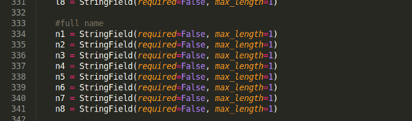

5 rules for naming variables
by Anthony Blackshaw · 18th January 2015
Writing poor quality code will dramatically reduce the time you get to spend doing things you love, if you’re lucky enough to leave a project shortly after such a contribution everyone who subsequently has to work with your code will think you an arsehole.
Above: This example is code found in a live and commercial project. Clearly the developer thought user.n5 would still clearly point to the 5th character of a the user's name when used elsewhere.
The names we devise for folders, files, variables, functions, classes and any other user definable construct will (for the most part) determine how easily someone else can read and understand what we have written.
To avoid repetition in the remainder of this section we use the term variable to cover folders, files, variables, functions, and classes.
Be descriptive and concise
It’s the most obvious naming rule of all but it’s also perhaps the most difficult. In my younger years I would often use very descriptive names, I pulled the following doozy from the archives:
design_inspiration_competition_promotion_code_list
At a whopping 50 characters it can hardly be described as nondescript, however I’m sure anyone who came after would have cursed me for using such a long name. A far better name for my list of promotion codes would have been:
promotion_codes
Or possibly:
promo_codes
However care should be taken when using abbreviations or acronyms. Only use an abbreviated term if it is well known and/or its use is standard practice (e.g db, id, url, etc.) If you’re not sure if an abbreviated form of a term is well known err on the side of caution and don’t abbreviate:
p_codes
pcs
There is one exception to this rule - list or dictionary comprehensions (if you’re not familiar with list comprehension look it up). Using a single letter abbreviation in this case is preferential to a more descriptive name, for example:
[employee.name for employee in employees \
if employee.role == “developer”]
[e.name for e in employees if e.role == “developers”]
Be conscious of scope
In the first rule we reduced a very descriptive term to a more concise version promotion_codes. So why not reduce it further (e.g codes) and why was it acceptable to reduce it at all? The answer lies in scope.
The scope in which you declare a variable determines how much information must be included in the name. For example a variable declared in the settings module for a project will infer little information from its scope and therefore needs to be more descriptive.
settings.username = 'foo'
settings.db_username = 'foo'
Now consider the scope when the same variable is used in a function:
def connect_to_db(db_username, db_password):
def connect_to_db(username, password):
The purpose of our function is to connect to the database and therefore we can infer that the supplied username and password are for this purpose and there’s no need to include db in the variable names.
On occasion it may be necessary to use more descriptive names to avoid a naming conflict within the same scope. Consider our first example where we declared a username for the database in the settings file, what if the project uses multiple databases?
settings.redis_db_username = ‘foo’
...
settings.mysql_db_username = ‘bar’
...
Here the name of the database application is used to namespace the variables and avoid any conflict whilst keeping the names themselves as concise as possible.
Pluralize when naming collections
Harking back again to my youth there was a time where I would have avoided using plurals at all costs, instead opting to follow the convention of appending _list to any variable associated with a collection of items. With the benefit of time I’ve come to prefer variable names that sound natural.
for colour in colour_list:
...
for colour in colours:
...
I’ve refrained from marking either example as good or bad as they are both acceptable in my eyes, however colours would be the preferred term purely on the base it is the most concise and natural sounding.
Advocates for using _list often argue that it reduces common spelling mistakes with words like category/categories and hero/heroes. I would counter that in the same way I will grammar and spell check this document before asking you to read it you should take the same pride in the code you write.
Read your code out loud
If you can read a line of code and comprehend it in one that’s a good indication that it’s well written using good variable names. If on the other hand if jars or you find yourself re-reading it multiple times before it makes sense then there’s room for improvement.
Reading your code out loud (or in your head if you’re attracting too much attention) is a sure fire way to spot badly named variables.
Above all else be consistent
When you work with old or externally written code chances are there will be difference in the rules the author(s) used when coming up with variable names. Unless you’re going to rewrite and maintain all the code in future do not break from the existing naming conventions.
If they prefix numbers with num_ or append _list to lists then follow suite, whilst conventional wisdom tells us two wrongs don’t make a right, mixing styles within a project will only make things worse.
| Position | Name |
|---|---|
| Chair | Helen Troughton |
| Vice-chair | Sarah Stone |
| Secretary | Bridget Brickley |
| Treasurer | Sarahann Holmes |
| Publicity officer | Zillah Cimmock |
If you have to work with code that has a mixture of styles or no clear style at all then I refer you to my opening statement.
Further reading...
- Code complete 2 (by Steve McConnell)
- The Art of Computer Programming: Volumes 1-4a (by Donald E. Knuth)